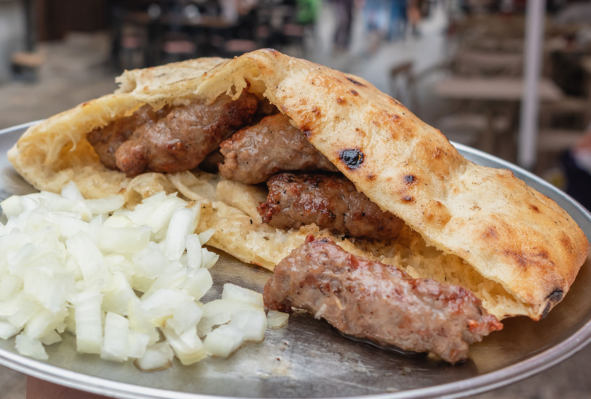

Ćevapi - My Beloved

Description
Best stuff ever. If you never had it, you're missing out. Real ones know.
Best served with Kajmak or Ajvar, but sadly it ain't included in the
picture.
Ćevapi - Ingredients
- 600 g finely minced beef (1.3 pounds)
- 300g finely minced lamb (or pork mince if you prefer) (10 oz)
- 3 cloves garlic, minced
- 1 teaspoon fine salt
- 1 teaspoon black pepper
Ćevapi - Step by Step Instructions
-
In a large bowl, combine beef, lamb, and salt (plus other spices if you
so desire)
- Knead the mixture with clean hands for 5 minutes
- Cover the meat with plastic wrap and refrigerate overnight
- Uncover the meat and stir in minced garlic and black pepper
-
Shape the mixture into small logs no longer or wider than an index
finger – it is best to do this with wet hands, so the meat does not
stick to you. Keep wetting your hands after each few that you roll
- Preheat your grill. Ideally, you should use a charcoal grill
- Brush the grill with some olive oil
-
Grill the minced fingers on a medium heat until evenly grilled and
browned on all sides
-
Serve warm with Turkish flatbread and freshly chopped onion (and ajvar
if you have it!)